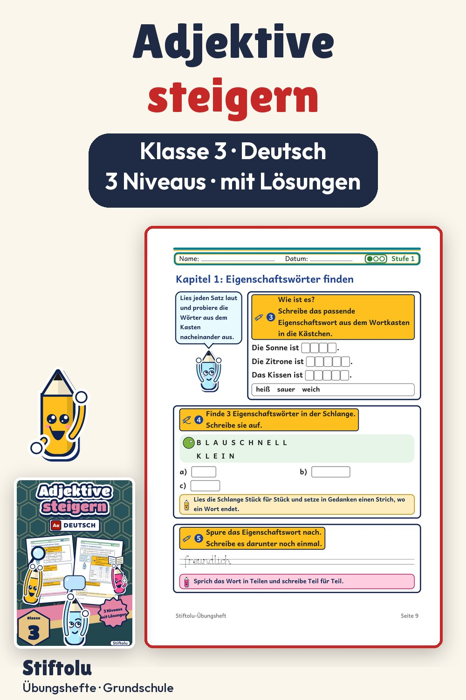

Werbung · Übungsheft von Stiftolu
Adjektive steigern in Klasse 3 – Vergleichsstufen und Gegensätze

Schnell, schneller, am schnellsten: Beim Steigern von Adjektiven zählen Grundform und Vergleichsstufen, auch mit Umlaut und unregelmäßigen Formen. Ein Kapitel widmet sich den Gegensätzen, auch mit Vorsilbe. Dazu kommen drei Niveaus und Lösungen auf 50 Seiten, erhältlich auf eduki.